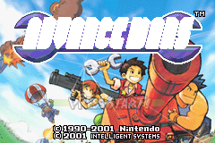

Advance Wars (Europe) (En,Fr,De,Es) (Virtual Console)
Flash 512K Save Format Mapped (Family Spec) gbakit Built-In 💾 MultiBoot 🎮 4P Link
Cartridge Identity
- Game Code
AWRP(FamilyAWR)- Header Title
ADVANCEWARSP- Maker / Revision
01/ rev0- ROM Size
- 8.0 MiB (8,388,608 B)
- Save Media
Flash 512K- SHA-256
f9d32d79f4f8bc0f98925a070468dbaddbe8f0446a479cb172bfdbb701ed9fc5- Engine / SDK Group
comm-009(51 families)
Link Cable & Multiplayer Communications
This title contains detected communication capabilities: 💾 MultiBoot 🎮 4P Link.
Detailed protocol specifications, SIO registers, Joybus commands, and MultiBoot sequences are documented in the Link & Multiplayer Reference.
- Multi-Player SIO (4P)
- 16-bit ring network · SIOCNT (
0x04000128) literals:0x030174,0x030228,0x030284· SIODATA32/SIOMULTI0 (0x04000120) literals:0x0304d8,0x06aa20,0x06aa84 - Single-Cart MultiBoot
- Single-Cartridge MultiBoot (Download Play) client/server handler · Thumb SWI 0x25 (
0xDF25):0x07a1a2,0x0f615c,0x252cde,0x259aea
Battery Save Format Specification (Family Shared)
This release shares its save architecture with canonical family reference Advance Wars (Europe) (En,Fr,De,Es) (Family
AWR).
Open Family Save Format Spec (AWRP)Download save-format.json
- Canonical Specification
AWRP· 13 mapped fields · 2 verified checksum(s) · Confidence: MEDIUM- gbakit Built-In Support
- Built-in (AWRP)
gbakit save verify AWRP save.sav
gbakit save decode AWRP save.sav
gbakit save fix AWRP damaged.sav -o repaired.savLate-Game / Unlocked Battery Save
Synthesized clean-room with zero ROM patching and verified live in headless
libmgba.so.0.10 —
see the Late-Game Saves & Boundary Fuzzing Showcase.
- Late-Game Save
- Download
awrp_lategame.sav(64 KiB) · gbakit verify OKsum8_inv
Maxed session counter, War Room / Battle Map unlock flags, and sparse stride progression table with verified sum8_inv guard checksum.


Observed Battery Save Layout
- Fill Byte & Active Size
0xFFfill · 1,161–1,161 / 65,536 B active (entropy 0.38 bits/B)- Active Offset Ranges
0xF000–0xF421,0xF425,0xF429,0xF42D,0xF431,0xF435,0xF439,0xF43D, +8 more (73 total)- ASCII Magic / Headers
wars,Advance- Observed Variable Regions
- 0 bytes across 0 spans: None
- Candidate Checksum/Counter Spans
- None
Asset Map (formatkit.asset-map.v1)
Download AWRE-r1-4dd4bd22441f29b2.asset-map.json.gz (229,274 B (223.9 KiB)) Verified PASS · 28.86% coverage
| Metric | Bytes / Value | Entries |
|---|---|---|
| Identified | 1,177,153 B (1.12 MiB) (28.07%) | 2,279 |
| Mapped | 0 B (0.00%) | 0 |
| Opaque | 33,420 B (32.6 KiB) (0.80%) | 1 |
| Unknown | 2,983,731 B (2.85 MiB) (71.14%) | 1,952 |
| Total ROM Size | 4,194,304 B (4.00 MiB) | 4,232 |
| Coverage % | 28.86% | — |
| Entries w/ Code Refs | 2,345 / 4,232 (55.41%) | — |
Top Identified Formats: compress.bios-lz77 (703 · 878,349 B (857.8 KiB)) · gfx.gba-palette (1,547 · 192,544 B (188.0 KiB)) · compress.bios-rle (25 · 62,326 B (60.9 KiB)) · compress.bios-huffman (1 · 32,958 B (32.2 KiB)) · rom.multiboot (1 · 8,984 B (8.8 KiB)) · audio.m4a-song-table (1 · 1,800 B (1.8 KiB)) · gba.rom-header (1 · 192 B)
Largest unknown Extents (Headerless / Custom Asset Candidates)
| Offset | Size | Shannon Entropy | Code Refs |
|---|---|---|---|
0x001C8DA8 | 307,072 B (299.9 KiB) | 7.429 bits/B | 0 |
0x003BD0E0 | 240,788 B (235.1 KiB) | 6.726 bits/B | 2 |
0x0018AD3C | 149,996 B (146.5 KiB) | 7.410 bits/B | 0 |
0x001685D4 | 141,128 B (137.8 KiB) | 6.683 bits/B | 0 |
0x00213D48 | 123,552 B (120.7 KiB) | 7.050 bits/B | 0 |
gzip -dk AWRE-r1-4dd4bd22441f29b2.asset-map.json.gz && gbakit map verify rom.gba AWRE-r1-4dd4bd22441f29b2.asset-map.json
gbakit assets export rom.gba --asset-map AWRE-r1-4dd4bd22441f29b2.asset-map.json -o out/Text, Fonts & Scene Data
- Primary Text Encoding
- Plain ASCII (uncompressed) (
5,305ASCII strings ·29Shift-JIS runs ·4LZ77 ASCII blocks) - Font & VWF Indicators
- VWF Width Table 1bpp Font · BIOS SWIs: BitUnPack
0x10:20· LZ770x11/12:40· Huffman0x13:8· RLE0x14/15:13 - Scene & Packaging
36ROM pointer tables (≥32 entries,5≥200) ·0relativeu32TOCs ·238OAM metasprite hits
Hardware MMIO Subsystems
ppu_display0x80107dc,0x801bbdcsave_bus_sram_flash0x807a1c8,0x807a6a8,0x807a808,0x807a9dc
Regional Variants & Revisions (Family AWR)
- Advance Wars (Europe) (En,Fr,De,Es) (
AWRP, 8 MiB) - Advance Wars (USA) (
AWRE, 4 MiB) - Advance Wars (USA) (Rev 1) (
AWRE, 4 MiB) - Advance Wars (USA) (Virtual Console) (
AWRE, 4 MiB) - Lu-Hai-Kong Dazhan (China) (Proto) (
AWRC, 8 MiB)